User Guide for Linux OS#
Introduction#
Aurreum Data Protection Suite (ADPS) provides the capability for the backup and restore of Linux operating system. This guide introduces how to properly use ADPS to back up and restore Linux OS.
Features#
Feature |
Description |
|---|---|
Backup source |
Linux OS partition |
Backup type |
Full backup, incremental backup |
Backup target |
Standard storage pool, de-duplication storage pool, local storage pool, tape library pool, object storage service pool |
Backup schedule |
Immediate, one-time, minutely, hourly, daily, weekly, monthly |
Backup compression |
None, fast |
Handling sparse files |
Handling sparse files is supported |
Reconnection time |
The job continues after the abnormal reset occurs in the network within the set time. The set time is 10 minutes by default. |
Speed limit |
Limit data transfer speed or disk read and write speed |
Pre/Post action |
The pre action is executed after the job starts and before the resource is backed up or restored. The post action is executed after the resource is backed up or restored. |
Restore type |
File-level restore, ISO image recovery |
Restore location |
Original host, different host |
Restore granularity |
Entire Linux OS, volume |
D2T |
Back up data directly to object storage |
D2C |
Back up data directly to tape library |
LAN-Free |
Back up to and restore from LAN-Free storage pools |
Storage pool replication |
Replicate backup sets from the source storage pool to another pool |
IPv6 |
Transfer and manage data over IPv6 network |
Access Key login |
Access Key login is supported |
Install and Configure Agent#
Verify Compatibility#
ADPS supports the backup and restore of various Linux distributions, such as Debian, RedHat, and their derivatives. Before deploying the agent, check whether the OS is supported.
Download Agent Package#
Open a browser and log in to ADPS as the admin. Click Resource -> Install Agent icon. You can download the installation packages according to your needs.
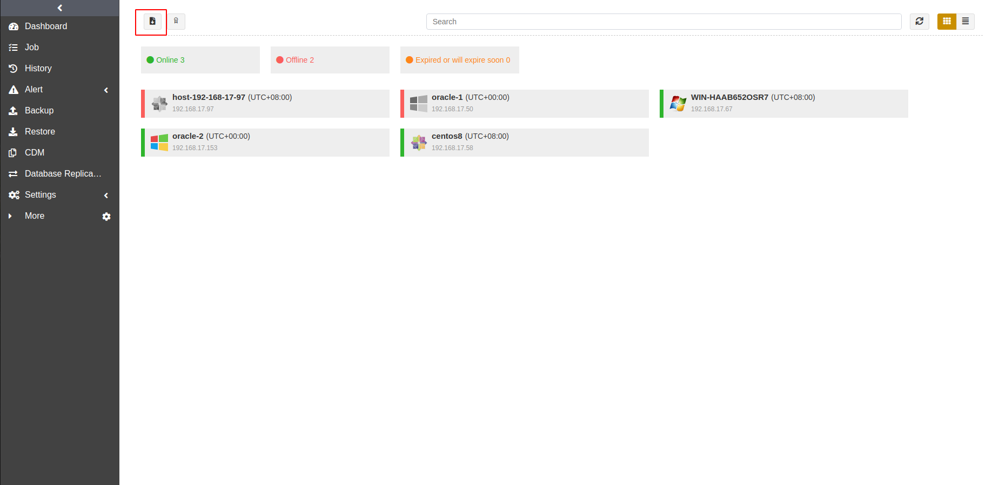
Install and Configure Agent on Linux OS#
Select Linux as the system and OS as the module. Copy an installation command.
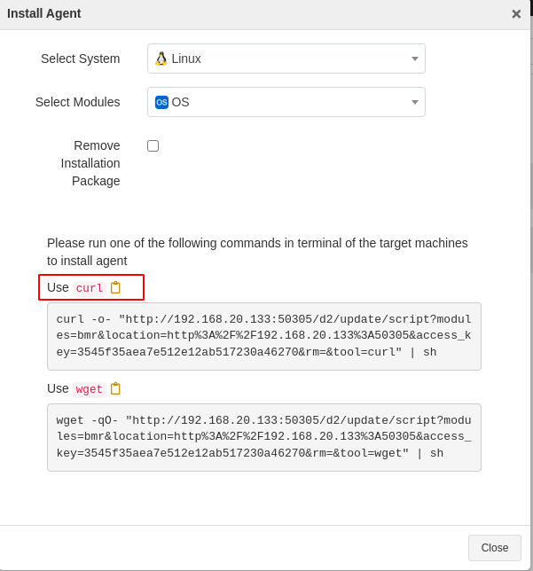
Paste the command on the command line, and press Enter to execute the installation.
# curl -o- "http://192.168.20.133:50305/d2/update/script?modules=bmr&location=http%3A%2F%2F192.168.20.133%3A50305&access_key=3545f35aea7e512e12ab517230a46270&rm=&tool=curl" | sh
Check Successful Installation#
After the successful installation, log in to ADPS as the admin and see that the host is on the Resource list.
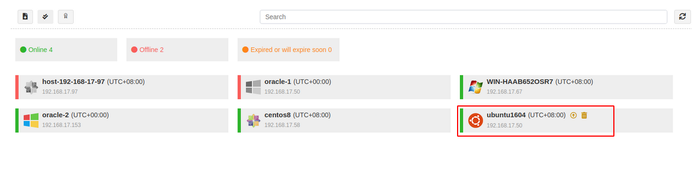
Before You Begin#
Check Resource#
Log in to ADPS as the operator and go to Resource. You can see the activated and authorized resource on the list and its state is “Online”. Please refer to Activate License and Assign Authorization if the resource is not available.
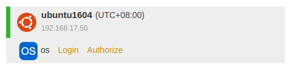
Check Storage Pool#
Log in to ADPS as the operator, go to Storage Pool, and verify there is any storage pool available. If a storage pool is not present, please contact the admin to create one and assign permissions to the operator.
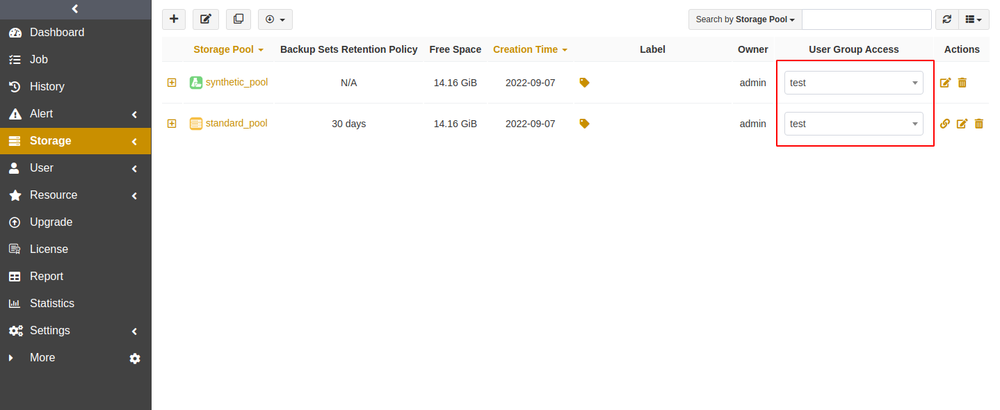
First Time Login#
Before creating the first Linux OS backup and restore, you need to Login to OS first.
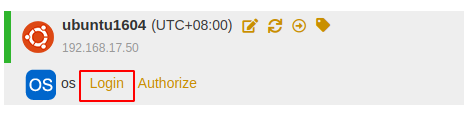
Linux supports the login by two authentication methods: OS Authentication and Access Key.
OS Authentication: Use the OS user account to log in.
Access Key: Log in with Access Key tied to the user who has been authorized to operate the resource. Data security risks exist when backup and restore jobs are carried out without the database password.
Select the Authentication method. Enter User and Password. Click Login.
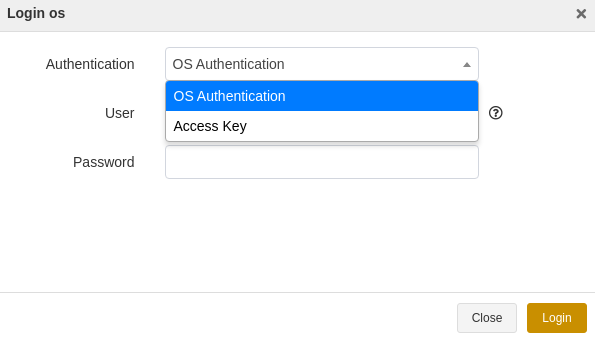
Note:
To use the Access Key authentication, the admin must enable Access Key Login Instance in Settings->Settings->Security.
Create Backup Jobs#
This chapter introduces how to back up the Linux OS.
Prerequisites#
You have installed the agent. For installation, please refer to Install and Configure Agent.
You have activated the agent and assigned the authorization. For details about the activation and authorization, see Activate License and Assign Authorization.
Log in to ADPS as the operator.
Create Full Backup Jobs#
(1) Click Backup. Select the OS that you want to back up.
(2) Select Full Backup as the Backup Type. Select the devices.
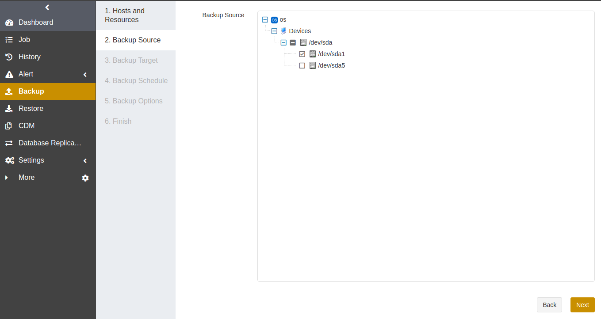
(3) Select Backup Target. You can choose the standard storage pool, local storage pool, de-duplication storage pool, tape library pool, and object storage service pool.
(4) Go to Backup Schedule to set the execution time of the backup job. For details, see Backup Schedule Operation. It is generally recommended to run a full backup on a weekly basis.
(5) Set Backup Options, including common options and advanced options.
Common options:
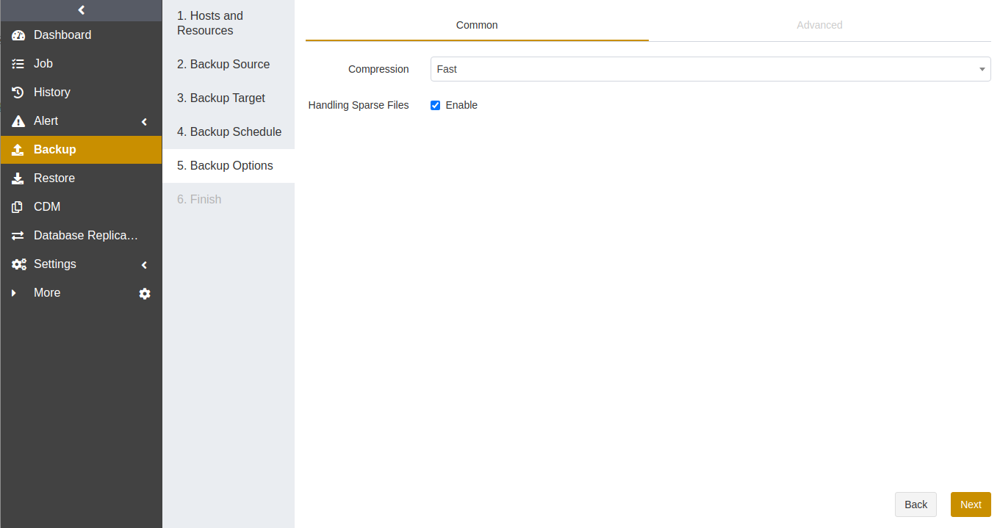
Compression: Fast is enabled by default.
None: No compression during the backup.
Fast: Use the fast compression algorithm during the backup.
Handling sparse files: The option is enabled by default. Sparse files will be handled during the backup job.
Advanced options:
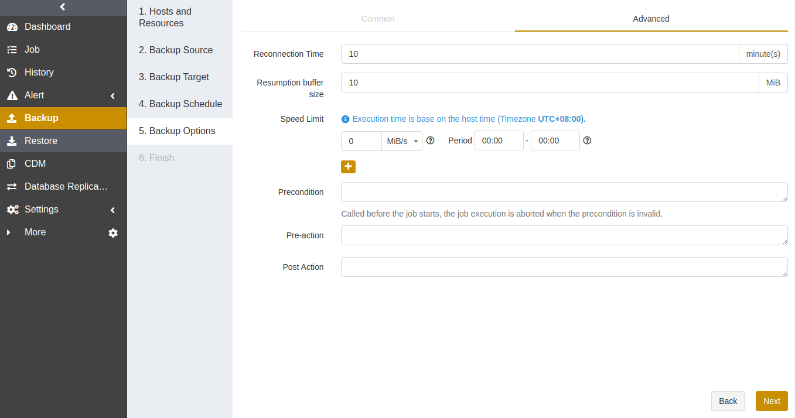
Reconnection time: The job continues after the abnormal reset occurs in the network within the set time. The value can be 1 to 60. The unit is minute(s).
Speed limit: Set the limit for data transfer speed or disk read and write speed. The unit can be MiB/s or KiB/s. Click the ‘’+‘’ icon to add limits at different times.
Precondition: The precondition is checked before the job starts. The job execution is aborted when the precondition is invalid.
Pre/Post action: The pre action is executed after the job starts and before the resource is backed up or restored. The post action is executed after the resource is backed up or restored.
(6) Set Job Name, and check whether the job information is correct. Click Submit.
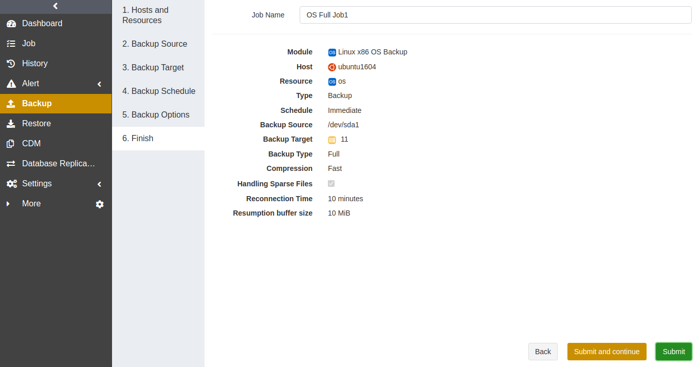
Create Incremental Backup Jobs#
Creating an incremental backup is the same as creating a full backup. Select Incremental Backup as the backup type and a full backup job as the base.
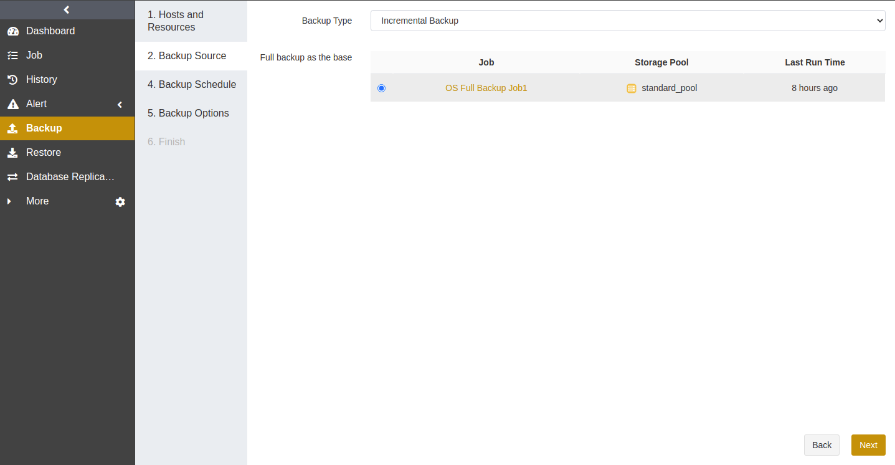
Recover Linux OS#
To recover Linux OS, you need to boot a temporary system using the recovery media. Then, connect the temporary system to the backup server to obtain a backup set for recovery.
Note:
Make sure that the hard disk space on the restore target server is greater than or equal to that of the source system.
If the source system has multiple hard disks, the restore target requires the same number of hard disks.
With LVM configuration, you can recover Linux OS to a smaller volume group, but make sure that there is enough space to store the data.
Use burning software to burn adps_bootable_recovery-version.x86_64.iso to a media such as CD or DVD.
Put the recovery media into the optical drive of your PC that executes the recovery job. To enter the Recovery UI to recover Linux OS, set the temporary system to boot from the recovery media, select the default item, and press Enter.
After the temporary system starts, you can see the Recovery UI. On the page, you can select the language for the interface. The first Network Card starts by default, and the IP address is obtained automatically. If the IP cannot be obtained automatically, select Manual as the method, and fill in the Address, Netmask, and Default gateway options. Click Modify and the configurations take effect. Click Next.
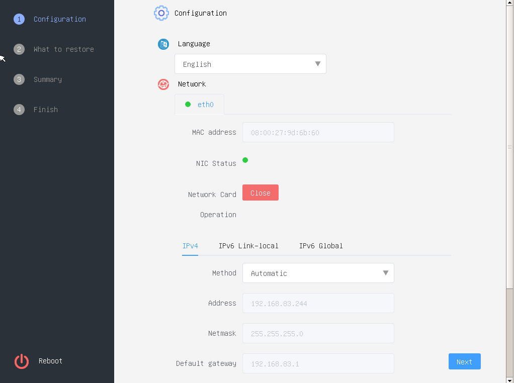
Select the recovery source. You can select the backup set from the backup server or the local device.
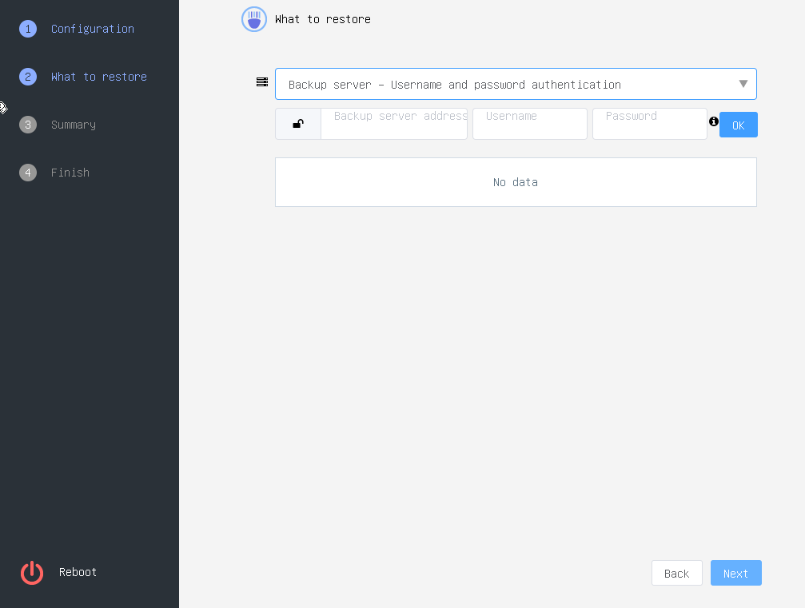
Two types of backup server authentication are available: Backup server - Username and password authentication and Backup server - API Key authentication. After you log in successfully using one of the methods, the page will list all Linux backup sets that you have permission to restore.
Backup server - Username and password authentication: This authentication type requires 2-Step verification via email. Enter the backup server address, username and password with the restore permission. Click OK to access the pop-up window, and fill in the verification code.
Backup server - API Key authentication: Enter the backup server address, username and API Key. Click OK.
When you select Device, all disc devices connected to the server will be automatically listed. Click the partition where the backup sets are stored, and select the relevant backup point in time.
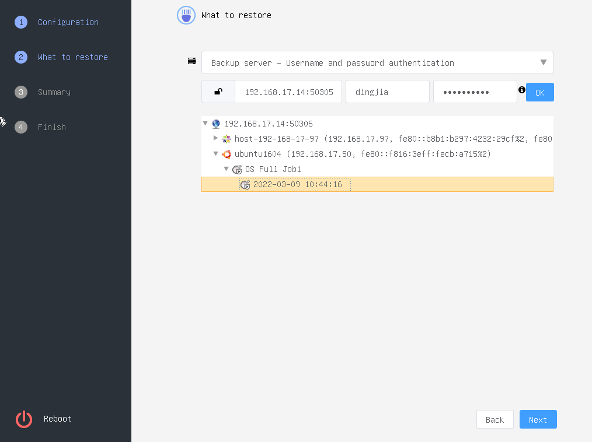
After you select the recovery source, click Next. Click Submit after confirming the job information is correct. You will see a progress bar of the recovery job on the page.
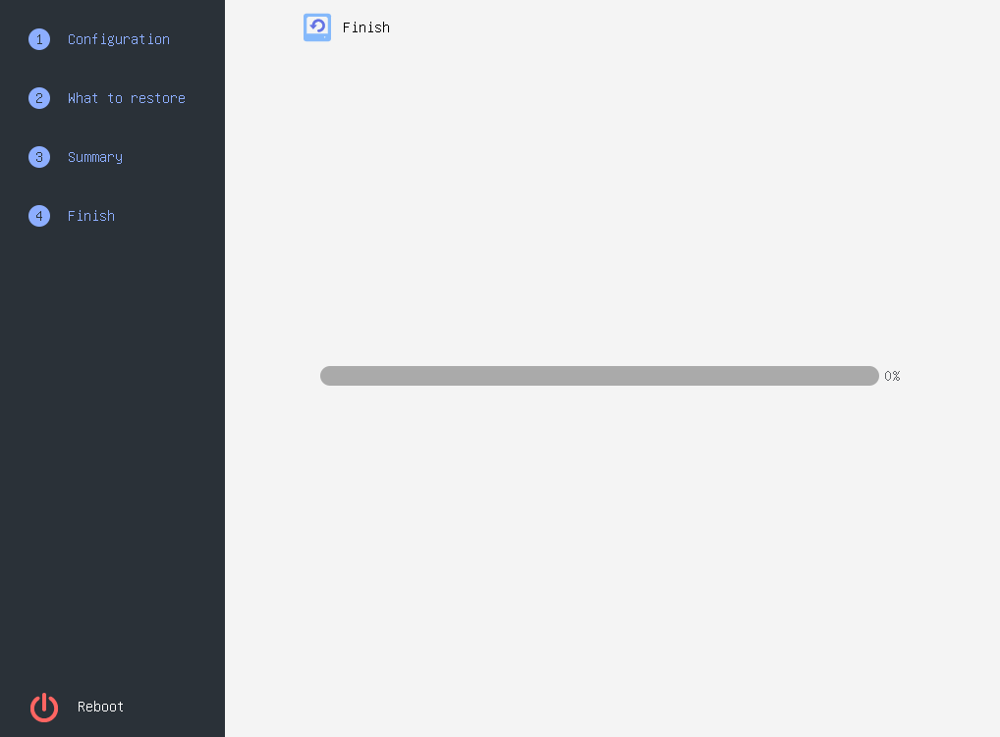
After completing the recovery job, click Reboot in the bottom-left corner to restart your PC and eject the optical disc. You can assess the recovered OS after the PC reboots.
Note:
To access the Recovery UI via the browser, enter the following IP address: http://IP/d2/agent/
Press ALT + q on the Recovery UI to enter the command line of the temporary system, where you can view the recovery logs and the IP address. You can also use ssh to remote access the IP address. The default username and password is root/root.
Use command LC_ALL=en.US.UTF8 /opt/aurreum/adps/bin/recovery_ui -qws to back to the Recovery UI from the command line.
If two hosts are running at the same time after the recovery job, modify one of the host’s host_uuid to avoid conflicts caused by the same agent environment.
Restore Linux Files#
ADPS supports restoring Linux files or directories from backup sets.
Click Restore, select the Linux host and the OS resource.
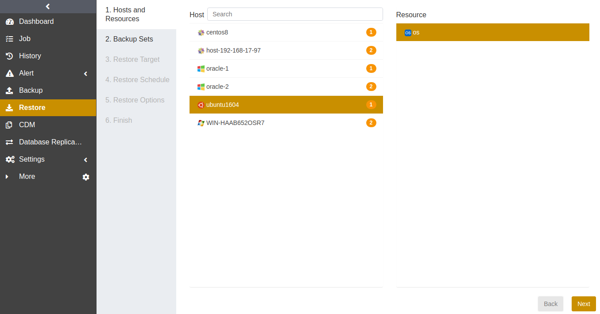
Select a backup point in time that you need to restore. When a point in time is selected, the files backed up at that point in time are listed in the File panel below. Select the files or directories that you want to restore, and click Next.
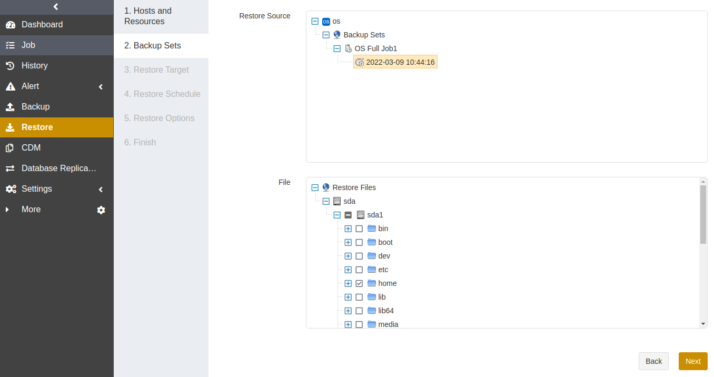
Select the restore target. You can select the original host or a different host as the restore target. Click Next.
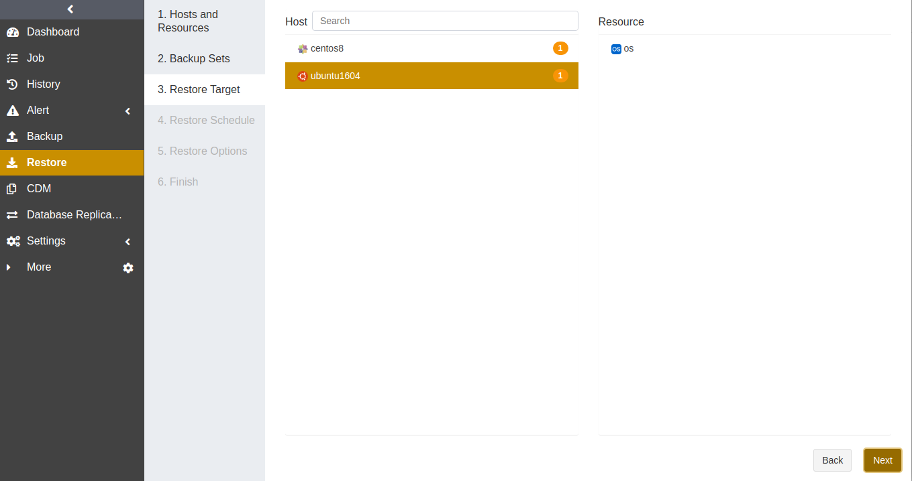
Set the restore schedule. Immediate is selected by default.
Set the restore options. Under the Common tab, you can set Restore Partition Information and Restore Location. If you check the Restore Partition Information option, the partition and files in the partition will be restored to the original path by default; if the option is unchecked, you can select a different path as the restore location.
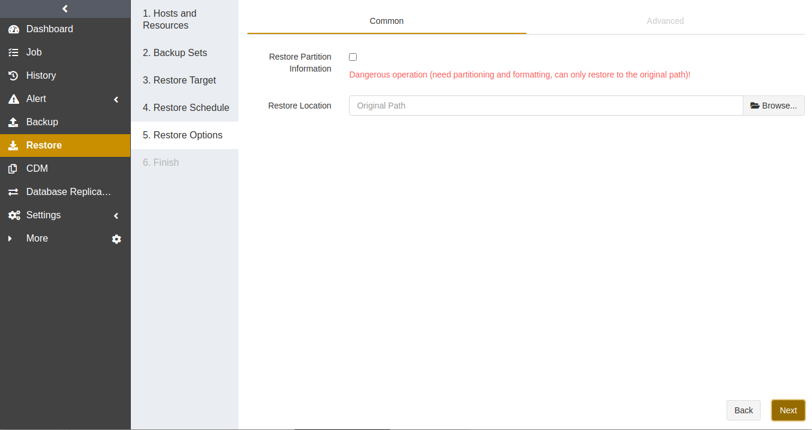
Under the Advanced tab, you can set the reconnection time, resumption buffer size, speed limit and other options according to your need.
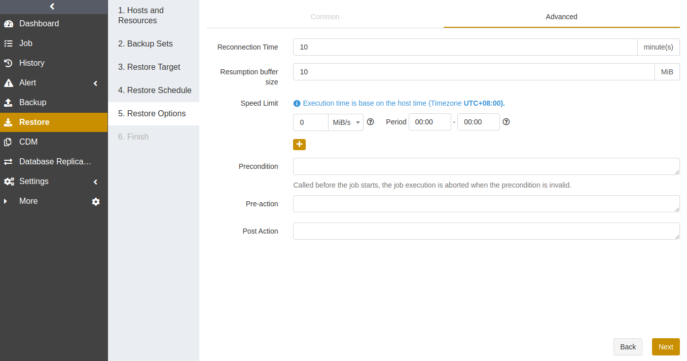
Set Job Name and click Submit after confirming the job information is correct.
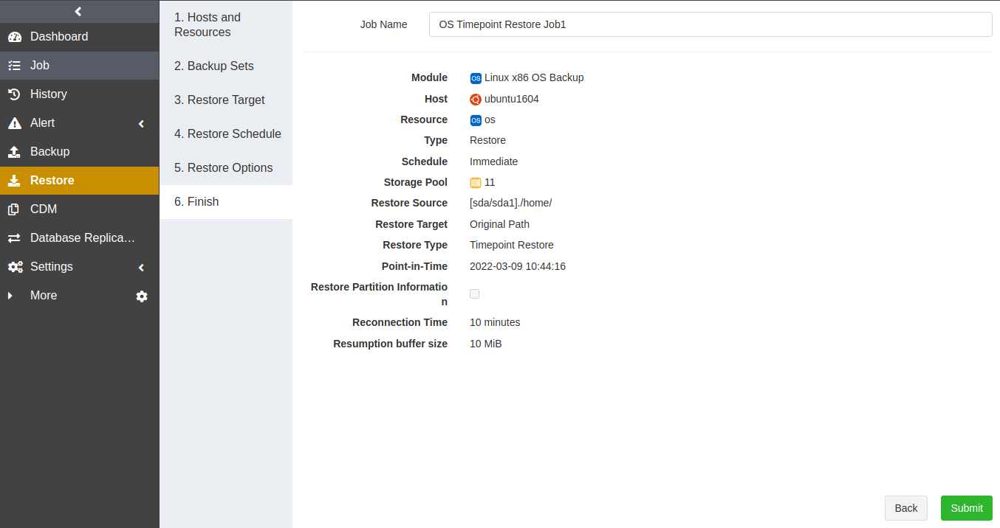
Note: - If the admin enables Job Approval function, the job will be executed after the admin approves the job.
Manage Jobs#
On the Job interface, you can view the backup and restore job information of all agents, start, modify, clone, and delete the jobs.
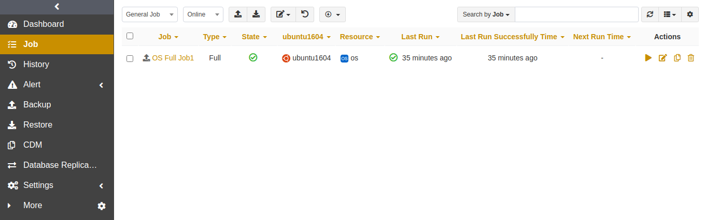
Start: Click
 to start the job immediately.
to start the job immediately.Modify: Click
 to modify the basic job information, the backup/restore schedule, and the backup/restore options.
to modify the basic job information, the backup/restore schedule, and the backup/restore options.Clone: Click
 to create multiple similar backup jobs.
to create multiple similar backup jobs.Delete: Click to access the confirmation window. Click OK to delete the job.
Backup Protection Strategy#
Backup Schedule Operation#
ADPS provides six types of backup schedules. The schedule type selected is only valid for the currently created job.
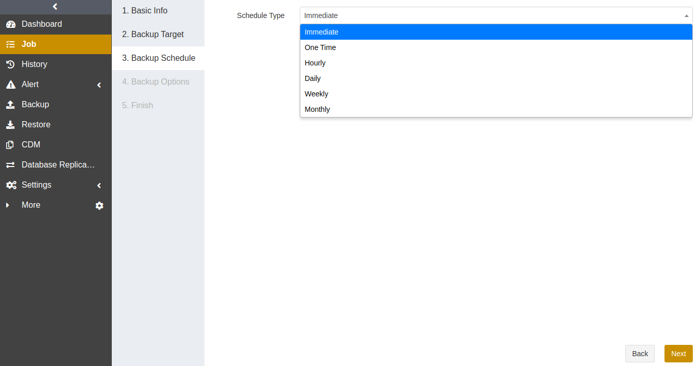
Immediate: The job immediately starts to run after it is submitted.
One time: After the job is created, it will be in an idle state and start to run when the specified Start time is reached.
Hourly: After the job is created, the first run will be initiated at the specified Start Time. The next run will be executed after a specified number of hours/minutes within the time range according to the setting. If the unit is Hour, then you can set the value from 1 to 24. If you select the Minute as the unit, then you can set the value from 1 to 60.
Daily: After the job is created, the first run will be initiated at the specified Start Time. The next run will be executed after a specified number of days according to the setting. The value is an integer between 1 and 5.
Weekly: After the job is created, the first run will be initiated at the specified Start Time. The next run will be executed after a specified number of weeks according to the setting. You can specify which day of the week to run the job.
Monthly: The job runs on the specified days of some months at the specified time. For example, you can set the job to run on January 1 and June 1 at 20:00. Or you can set it to run on the first Monday of every month at 20:00.
Example: Perform the job every two weeks on Friday at 18:00
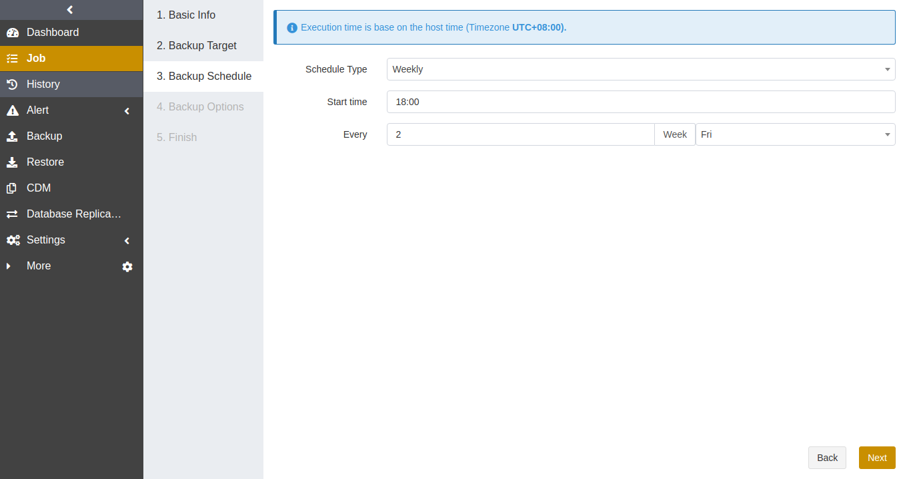
The actual execution time is:
If the current time is Friday 17:00, the run time is Friday 18:00 (the current day).
If the current time is Thursday 17:00, the run time is Friday 18:00 (the next day).
If the current time is Saturday 17:00, the run time will be next Friday 18:00.
After the first run is completed, the job will start automatically at 18:00 on Friday every two weeks.
Backup Strategy Advice#
There are two types to back up Linux OS: full backup and incremental backup.
When the application traffic is relatively small, run a Full Backup once a week to ensure that you have at least one recoverable RTO every week.
After that, you can run an Incremental Backup every day to reduce the backup time and ensure that you have at least one recoverable RPO every day.
Limitations#
Function |
Limitations |
|---|---|
Backup |
The backup of the SUSE Linux Enterprise btrfs filesystem is not supported. |
File-level restore |
The restore of the LVM partition is not supported when you enable the Restore Partition Information option. |